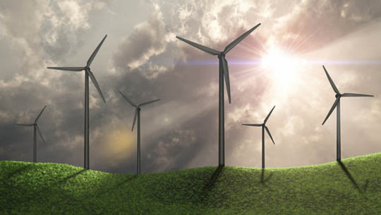

Wind Power and The Environment
Wind power is a form of renewable energy that harnesses the natural power of wind to generate electricity. It has gained significant popularity in recent years due to its low environmental impact and sustainability. As concerns about climate change and carbon emissions continue to rise, wind power has become a promising solution for reducing carbon emissions and mitigating the effects of global warming.
One of the primary advantages of wind power is its low environmental impact. Unlike traditional fossil fuels, wind power does not produce harmful pollutants or greenhouse gases that contribute to climate change. The energy generated by wind turbines is clean, renewable, and sustainable, making it an attractive option for reducing carbon emissions and promoting environmental sustainability.
Another advantage of wind power is its ability to provide energy independence. Unlike traditional energy sources that rely on imported oil or gas, wind power is locally sourced and can be generated on-site. This reduces dependence on foreign energy sources and promotes domestic energy production.
Wind power also has the potential to create jobs and stimulate economic growth. As the wind power industry continues to expand, it is creating new job opportunities in manufacturing, construction, and maintenance. Additionally, wind power projects can provide a source of revenue for rural communities through land leases and property taxes.
However, there are also some potential environmental impacts associated with wind power. One concern is the impact of wind turbines on wildlife, particularly birds and bats. Studies have shown that wind turbines can cause bird and bat fatalities, but the impact on overall populations is relatively small compared to other human activities, such as building collisions and habitat loss.
Another potential environmental impact of wind power is the visual impact of wind turbines on the landscape. While some people find wind turbines to be visually appealing, others find them to be an eyesore. Additionally, wind turbines can have an impact on the cultural and historical significance of a landscape, particularly in areas with significant cultural or historical heritage.
Overall, wind power has the potential to be a significant contributor to a sustainable and environmentally friendly energy future. While there are some potential environmental impacts to consider, the benefits of wind power, such as its low carbon footprint, energy independence, and job creation, make it a promising solution for reducing carbon emissions and promoting environmental sustainability. As technology continues to improve, wind power will likely become an even more attractive option for meeting our energy needs while protecting the environment.